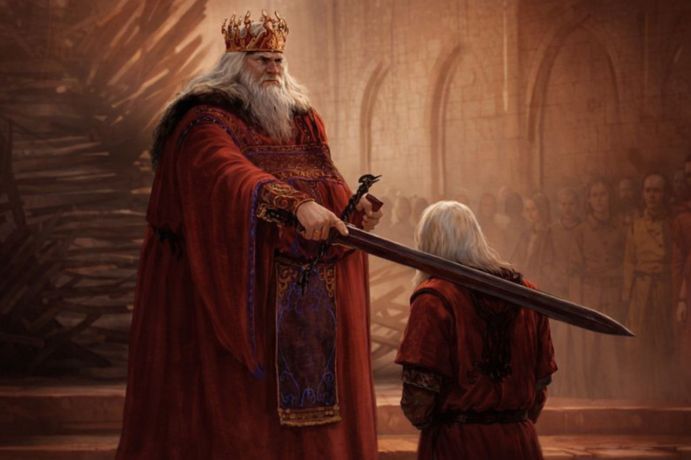

House Blackfyre is a cadet branch of House Targaryen It was founded during the reign of King Aegon IV The founder of House Blackfyre was Daemon Blackfyre originally born as Daemon Waters, a bastard son of King Aegon IV Daemon Blackfyre eventually rebelled against Daeron II in what became known as the First Blackfyre Rebellion. However, the rebellion ended when Daemon was killed in battle by Brynden Rivers,and the most important members of the Blackfyre family Daemon I Blackfyre Dide in the first rebellion and his sons aegon and aemon Blackfyre died with thir father in the rebellion and his other sons Daemon II Blackfyre attempted rebellion but failed and heagon Blackfyre led later rebellions and aenys Blackfyre killed before claiming the throne, and Later Generations Daemon iii Blackfyre died in rebellion and Mealys Blackfyre the last known Blackfyre Male and The Fall of House Blackfyre begam with The final major attempt to restore House Blackfyre came with Maelys Blackfyre. He led the war of the ninepennny kings but was ultimately defeated and killed by Barristan Selmy. With his death, the male line of House Blackfyre came to an end, marking the extinction of the house.in the year 300 AC Young griff appeared who is presented as Aegon Targaryen, the alleged heir to the Iron Throne. However. Some theories suggest that he may be part of House Blackfyre, especially due to the support of the Golden Company, a group historically known to favor Blackfyre


